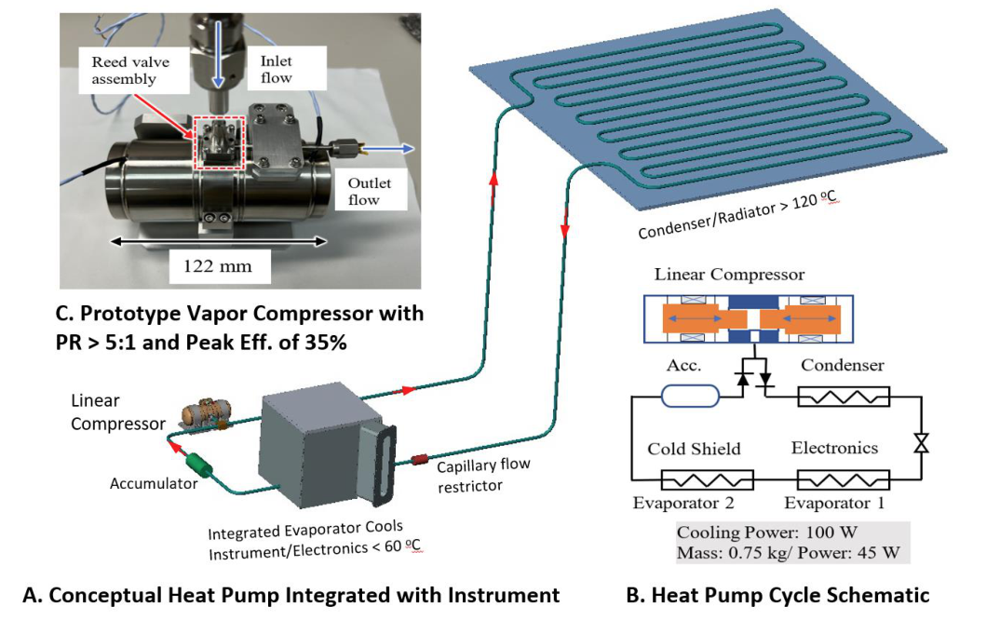
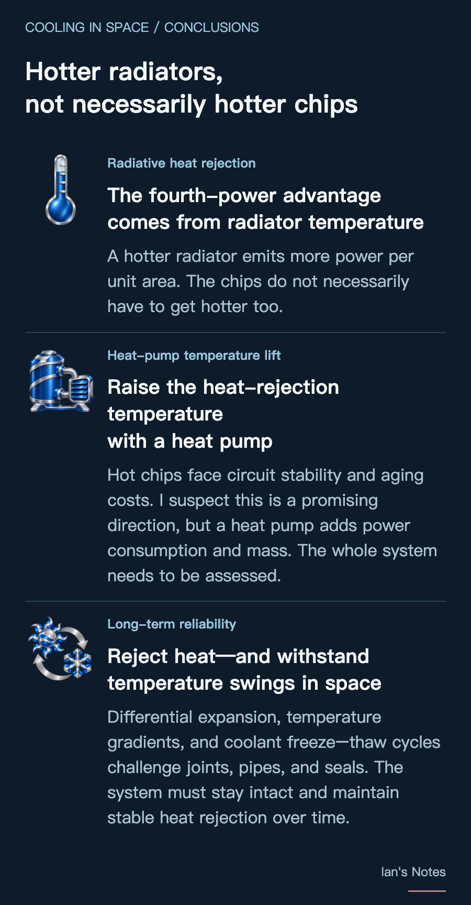

In an interview, Elon Musk said that raising the operating temperature by 20% on the absolute temperature scale, in K, could roughly halve radiator mass. A hotter radiator does emit more thermal radiation—but do the chips have to get hotter too? We need to separate the radiator’s physical advantage from the limits of the circuitry inside the chips.

On Earth, servers use air or coolant to carry heat away. Facility equipment then rejects that heat outdoors, for example through air convection or water evaporation in a cooling tower. As long as the chips can still be adequately cooled, allowing a higher coolant temperature may also reduce the use of chillers.
Outside a spacecraft is a vacuum, with no surrounding air to carry heat away. Consumable-water phase-change cooling, such as a spacesuit sublimator, is possible, but its water supply must be replenished. A space data center intended to operate for long periods would therefore rely primarily on radiators to reject heat through thermal radiation.
Why can a 20% temperature increase nearly halve the area?
Under the Stefan–Boltzmann equation for gray-body radiation, the power emitted by a radiator is:
Pₑₘᵢₜ = ε σ A Tᵣₐ𝒹⁴
A is the radiating area, ε is the surface emissivity, σ is the Stefan–Boltzmann constant, and Tᵣₐ𝒹 is the radiator’s absolute temperature in K. Actual net heat rejection also depends on heat absorbed from the Sun, Earth, and other external sources.
Area helps linearly, while temperature has a fourth-power effect. If the radiator’s absolute temperature rises by 20%, the power emitted per unit area increases to:
1.2⁴ ≈ 2.07 times
In a simplified case with unchanged emissivity and negligible external heat absorption, the area needed to reject the same amount of heat falls to about 48% of the original. This calculation must use absolute temperature in K: for example, 300 K to 360 K is approximately 27°C to 87°C.
Musk’s claim has a physical basis. But going from roughly half the area to roughly half the mass also assumes a similar mass per unit area. Pipes, supports, and deployment mechanisms may not shrink in the same proportion.
Musk was talking about designing chips to operate at higher temperatures. But the temperature in the fourth-power relationship is the radiator’s. Hotter chips only offer this potential mass benefit if they also allow the radiator to operate at a higher temperature. Another approach is to use a heat pump to separate the temperatures at the two ends.


What does running hotter cost the circuitry?
Product qualification conditions offer a reference for the temperatures at which chips can operate over the long term. For example, Nvidia’s H100 PCIe documentation lists thermal qualification temperatures of 87°C for the average of the GPU’s internal sensors and 95°C for the highest HBM sensor reading.
Higher temperatures may increase leakage and power consumption, and change transistor characteristics, affecting timing margins in logic circuits. Higher temperatures may also increase the read access time of on-chip SRAM caches, limiting their operating speed.
Over time, high temperatures and voltage stress may accelerate aging. Bias temperature instability (BTI) gradually shifts transistor characteristics, while electromigration can form voids or material buildups in metal interconnects, eventually causing connection failures.
A hotter radiator does not have to mean hotter chips
A heat pump offers another route: it uses external energy to move heat from the chips to a hotter radiator. In a vapor-compression heat pump, the refrigerant evaporates to absorb heat, the compressor does work to raise its pressure and temperature, and the refrigerant then condenses at the hot end, transferring heat to the radiator. The refrigerant circulates in a closed loop, while the radiator emits the heat to the outside.
This is not a new idea for space. A NASA-funded lunar-base study in 1993 analyzed using heat pumps to transfer low-temperature waste heat to hotter radiators. ESA completed a heat-pump concept study in 2016 and published test results for its high-speed compressor prototype in 2017. Heat pumps have therefore been a subject of space thermal-control research for decades.
More recently, Starcloud’s orbital data-center patent application, filed in 2025 and published in 2026, also lists heat pumps as an option for raising radiator temperature and reducing radiating area. I have not found direct public evidence that SpaceX, Nvidia, or Google has adopted this kind of space heat-pump design. Based on the principles and research above, I suspect heat pumps may well be a direction these companies are exploring, but that remains to be confirmed by public information.
This would allow the chips to remain cooler than the radiator, potentially reducing additional circuit and aging stresses. However, the radiator must also reject the energy consumed by the heat pump. If the chips generate 100 W of heat and the heat pump consumes another 30 W, the radiator must reject about 130 W. These numbers are illustrative, not the efficiency of a particular device.
Although the radiator’s thermal radiation per unit area increases, the heat pump requires additional energy and adds equipment mass. Whether the overall system uses energy more efficiently or rejects heat more effectively therefore requires an assessment of power consumption, mass, and reliability together.

Extreme temperature swings test space cooling systems
Space hardware may repeatedly move between sunlight and Earth’s shadow. For the International Space Station, external temperatures in sunlight and darkness can reach about +121°C and −157°C, respectively. Changes in chip workload also change the heat generated, potentially increasing the equipment’s hot-to-cold variation. Thermal control must moderate these changes so that the external extremes do not become the temperatures experienced by the chips.
The problem is that materials joined together do not necessarily expand by the same amount when heated. Metals, chips, solder, and seals each expand differently. When fixed together, one part may try to stretch farther than another, pulling on their joints; cooling makes them contract again. One cycle may cause no damage, but repeated cycles can accumulate fatigue and form cracks. JPL research on space electronics identifies fatigue from differential expansion as an important cause of solder-joint failure.
Stress can also arise without the whole device heating up and cooling down together. A hot end and a cold end can deform by different amounts at the same time. In the vacuum of space, there is no surrounding air to help even out temperatures. A heat-generating electronics board and a cold end facing deep space can sustain a large temperature gradient, causing thermal deformation and stress.
This repeated strain can also worsen existing weaknesses. An investigation into a coolant leak on the ISS localized the problem to the seals in a quick disconnect. Seal defects and delamination of the underlying plating were identified as the most likely causes, with on-orbit thermal cycling further aggravating the delamination. A cooling system therefore needs more than a leak-free connection today: its connectors and seals must remain intact through long-term temperature changes.
If temperatures fall below the coolant’s freezing point, freeze–thaw behavior adds another challenge. In a copper–water heat pipe, water expands as it freezes and may damage the pipe wall or its internal capillary structure.
Freezing does not necessarily mean failure. The key is whether the structure can withstand freeze–thaw cycles.
Raising radiator temperature can increase emitted power, but the system must still withstand operation, shutdown, and environmental changes. Whether the design uses hotter chips or heat pumps, radiator mass savings must be weighed against the power consumption, lifetime, and joint and seal reliability of the entire system.
Conclusion
The hotter the radiator, the more power it emits per unit area: that is the advantage of the fourth-power relationship in the Stefan–Boltzmann equation. Capturing that advantage requires a hotter radiator; the chips do not necessarily have to get hotter too.
Running chips hot comes at a cost to circuit stability and aging. I therefore suspect that using a heat pump to move heat from the chips to a hotter radiator may be more worth exploring than operating the chips at extremely high temperatures. But heat pumps require additional energy and add equipment mass, so the whole system needs to be assessed.
Temperature changes in space also test the cooling system’s long-term reliability. Differences in thermal expansion, temperature gradients within the equipment, and coolant freeze–thaw cycles can stress joints, pipes, and seals. Rejecting heat is only the first step. A practical design must remain intact and maintain stable heat rejection over long periods of operation.

Acknowledgements
Many thanks to everyone who shared their insights and feedback, especially Kevin Cameron and 莊子宏 for suggesting heat pumps, and Thomas David for highlighting the effects of high temperatures on SRAM and other on-chip circuitry. These discussions prompted further reflection and helped shape the additions to this article.